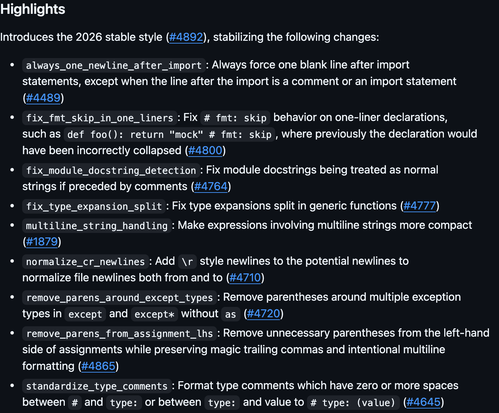

unofficial summary
−+Your diff after upgrading:
black 25.12.026.1.0
Change 1
Redundant parentheses on the left of = are removed
remove_parens_from_assignment_lhs
black 25.12.026.1.0
Change 2 · fix
A docstring after a comment is now seen as the module docstring
line 3 is new
Change 3
Type comments become # type: int
01install
02check
03reformat
real output
Python 3.12
Python 3.12
$ pip install black==26.1.0
…
Successfully installed black-26.1.0 …
$ black --check app.py
would reformat app.py
Oh no!
1 file would be reformatted.
$ black app.py
reformatted app.py
All done! 
1 file reformatted.

Source: 26.1.0 release notes (excerpt)
Also stable in 26.1.0
9 features in all. Three more:
+
One blank line after imports#4489
+
Calls on multiline strings stay compact#1879
+
Generic functions split at the arguments#4777
All of it was in
--preview during 2025.black 26.1.0
the 2026 stable style · 18 Jan 2026
$ pip install -U blacknewer 26.x releases keep the 2026 style
github.com/psf/black/releases/tag/26.1.0
Changes shown, by PR author: @Nikhil172913832 · @MeGaGiGaGon · @ranjodhsingh1729 · @kastkeepitjumpinlikekangaroos · @aneeshusa · @Exgene · release by @cobaltt7
Unofficial summary. Not affiliated with the Black project or the Python Software Foundation.